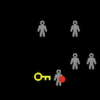
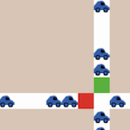
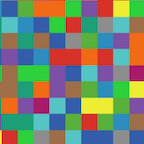
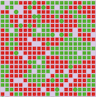
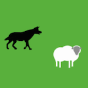
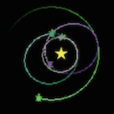
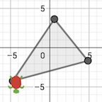

NetLogo GbCC 3.0
Documentation
NetLogo GbCC Dictionary
NetLogo GbCC Programming Guide
NetLogo GbCC Extensions Guide
Hello World and other Code Snippets
GbCC Models Library
Add a Model

Disease

Gridlock

IntroButtons

Segregation

Wolf and Sheep

Catch a Planet

Triangle
Create a GbCC Model
Step 1:
Create a model using
NetLogo
. Save your model as a .nlogo file.
Step 2:
Upload your .nlogo file and follow directions, using
Converter Tool 3.0
.
Step 3:
Go to the url for your model.
Other
In Development
c_remmler@yahoo.com